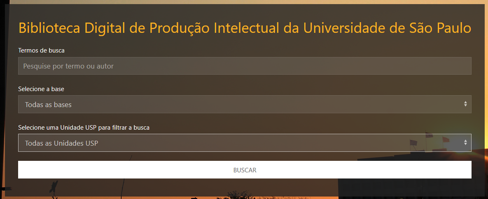
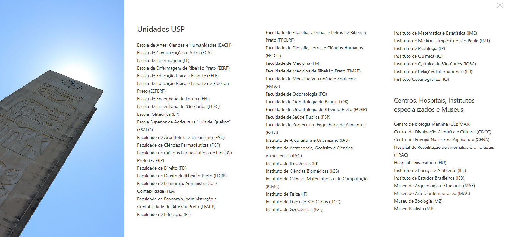
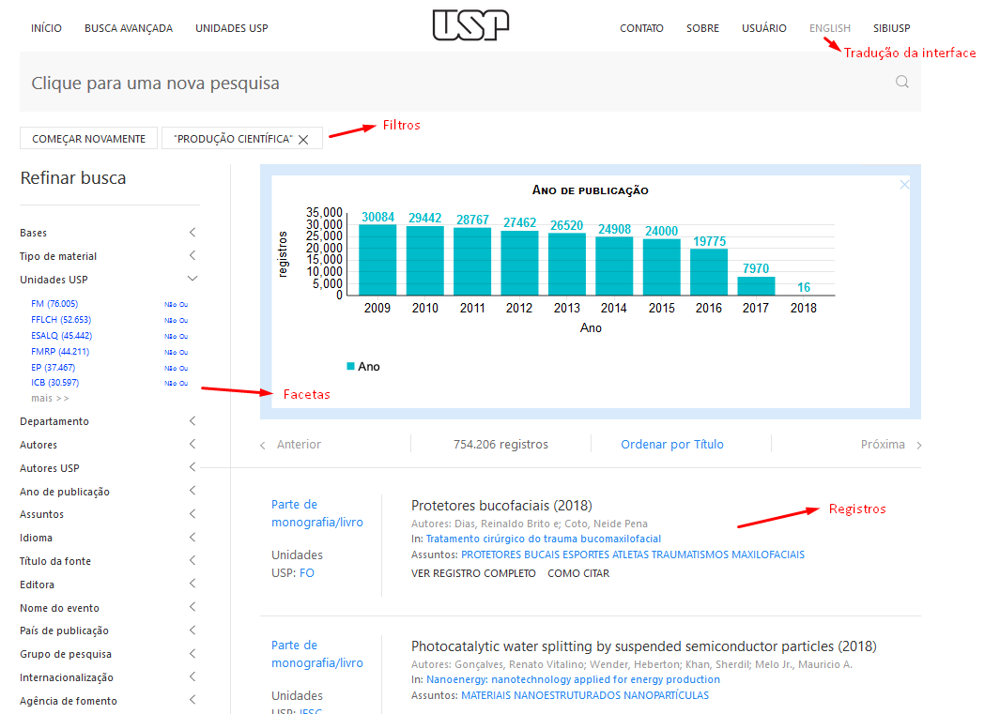

Tutorial BDPI
Biblioteca Digital da Produção Intelectual
Universidade de São Paulo
Sistema Integrado de Bibliotecas
Divisão de Gestão de Tratamento da Informação
O que você encontra na BDPI USP?
- Registros da Base de Produção Intelectual (Produção Científica, Técnica e Artística)
- Registros da Base de Teses e Dissertações
Busca simples

- Operador padrão: E
- Ignora maiúsculas e minúsculas
- Busca nos campos: Título, Autor, Assunto, Resumo e Unidade USP
- Possibilidade de limitar a busca por base (Produção Intelectual ou Teses e Dissertações) e Unidade USP
- Dica: Você pode substituir uma letra por (?) ou usar o * para buscar as variações. Ex: 199? (Para pesquisar em todos os anos da década de 90) e Biblio* (Para pesquisar palabras como Biblioteca, Biblioteconomia, Bibiografia, etc..)
Busca avançada
- Ver produções por autor nos formatos: Tabela, ABNT e RIS
Todos os registros por Unidade USP

- Acesso pelo link: UNIDADES USP, na menu superior
- Lista todas os registros em todas as bases por Unidade
Resultado da Busca

- Ordenação por data
- Facetas são filtros para novas buscas
Facetas
- Ordenação por data
- Facetas são filtros para novas buscas